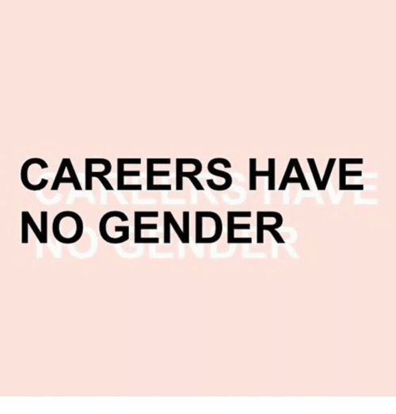

Our Purpose

First , the club serves to provide safe, understanding, and inviting environment for women to openly express their experiences dealing with discrimination, inequality, and judgment based on gender judgment. These experiences are what incentivized the creation of this club.
Second , the club aims to raise awareness of the gender discrimination issue in the professional arena and to educate its members and beyond on how to deal with such negative experiences. To do that, we are committed to organizing interactive sessions with the speakers who can provide a good understanding of current work environment to prepare the club members and event participants to deal with specific issues surrounding gender discrimination.
Third, we work to create a collaborative network between Hult’s women and companies who take pride in treating all of its employees and partners equally. In other words, we work to establish a LinkedIn for women. We focus on reaching out to current business professionals and establishing genuine relationships to provide a safe way for women to join the workforce after graduating in the companies that pride themselves in absolute inclusiveness and fairness.
Our way to accomplishment
To create a safe environment for women to express thoughts and past experiences we host regular meeting for the club and have a solid social presence. To add to that, we are working on Facebook, Instagram pages, and our own website to underline our commitment to the club’s success and open communication to learn from one another.
To raise awareness and educate, we are committed to collaborate with current professionals to share their experiences as they work. Learning from them and from our own past, we plan to publish articles that concern the Women in Business topic to establish a long-lasting impact of this club at Hult.
To deliver on LinkedIn for Women commitment, we have club participants who actively research and proactively reach out to companies to gain insight on how the issue of favoritism and inequality is addressed. As we establish genuine relationships with our leads and learn about companies who are serious about equality and total inclusiveness, we aim to create a page on our website dedicated to such companies and leads we have with them. This will serve to provide women with valuable network and facilitated job search after graduation.